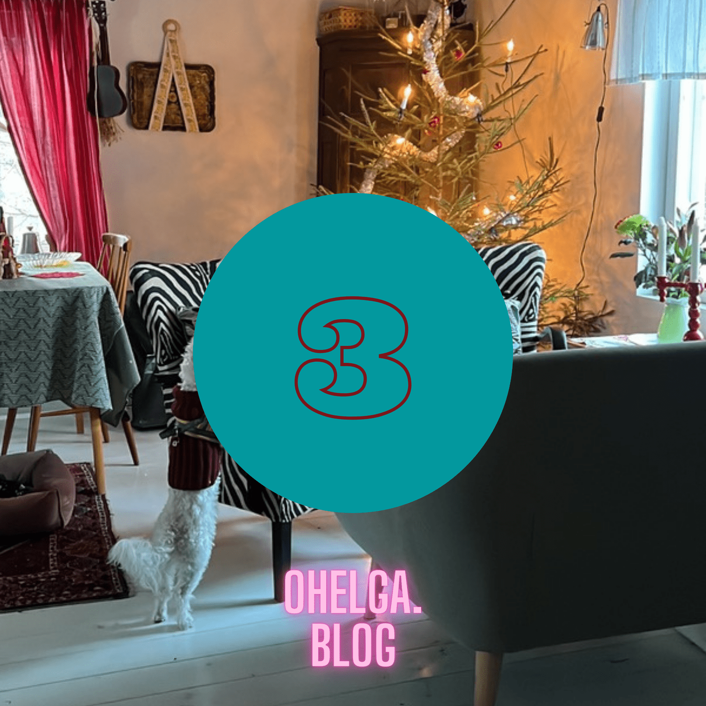

Tomi purskahtaa itkuun, mutta miksi? Johanna visar sin milda och förstående sida. Idag hör vi den version som lämpar sig bäst för romantiska middagar <3
Kuuntele kappale:
Backstreet Boys: O Holy Night -Apple Musicissa
Backstreet Boys: O Holy Night - på Spotify

Kommentit / Kommentarer (4)
<p>Det finns många klockrena versioner men den här var grumlig, lite oren helt enkelt.</p>
<p>Så ointressant att jag inte orkade lyssna till slut. Helt själadött med dollartecken i pupillerna.</p>
<p>Det stämmer nog det! Vi håller tummarna för att morgondagens version ska leverera lite klarare toner! /Johanna</p>
<p>:D </p>